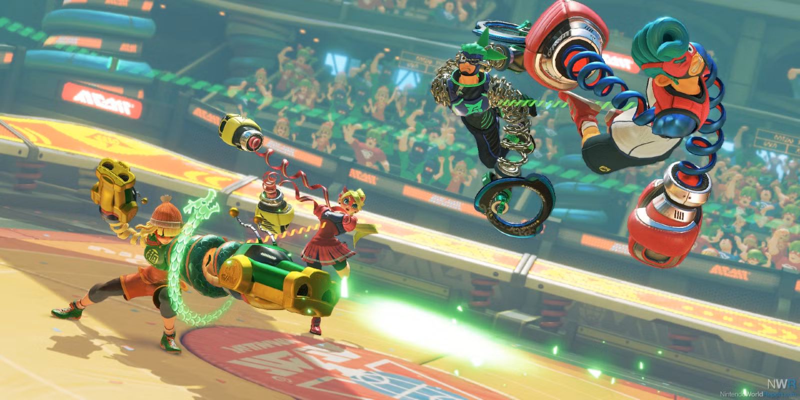

Anyone remember how Punch-Out on the Wii? Well, imagine stretching that into a game with projectiles and there you have ARMS. It's an Arena Fighter that'll have you competing in matches to bob and weave around long, stretchy, colorful punches, or thowing your own to avoid wide, stretchy grabs. Whatever I did, it always kept me coming back for more.
ARMS is an incredibly easy game to pick-up and play with very no complicated combos or tech, being a lot like Smash Bros. in that way. And like that game, there's several control options avaiable, from a single joy-con, to a pro controller, to even double joy-cons with motion control options. With these you get the option to throw to punches at the same time with more control on each. I found myself not doing huge swipes and swings, but instead subtle jabs and taps with this setup.
The main thing you'll have to learn is changing up your offense, be in from strafing and jumping around those giant gloves, sneaking in your super move once it's avaiable, or leaving yourself open to power up your ARMS, complete with elemental bonuses! There's also character abilities to consider, such as Ribbon Girl's multiple jumps or Helix's ability to squish under and squash around ARMS, with most of these having their own methods to charge ARMS as well. But that's just supplementory for this game's main attraction...
Rather than a particularly complex moveset or intricate frame data (attack speed), the game puts you in charge of the specifics of your playstyle by equipping what ARMS (boxing glove) loadout you want, with you being able to swap to two others between round if wanted. With each ARM having their own attributes like how big they are, how they arc, or how easy/hard they are for other punches to go through them.
And even the variants will feel pretty different, thanks to the aforementioned elemental properties. Like how the icy Chilla freezes foes as opposed to how the Bubb becomes bigger. Some propeties are rarer than others too, like how Helix gets one of the game's 2 blinding ARMS.
That said, you don't start with all of the ARMS. You start with 3 ARMS per character and have to unlock the rest manually by playing games to access this one target minigame. You not only have to do this process with all of the characters, but can get a single repeat ARM to mildly upgrade it, again, with all of the characters. Meaning there can be a lot of grinding to get all of the ARMS.
If you aren't a 1 vs 1 kind of person the game does have its share of other mode that usable in single player or co-op (mainly the later). There's a fairly short single player story mode, which while lacking in the story, it does sprinkle in lore bits. But mainly, there's a Multi-man Smash-esque mode where you fight 100 weak mooks followed by a stronger one, a few minigames modes: V-ball, Hoops, and SKill Shot, as well as supporting team battles and a couple of item modes. These are "just" nice distractions on your own, but are nice with friends.
As far as the game does try, it somewhat falls short. With not too much to do for the lone player, especially in this day and age where the game isn't exactly super populated. But the game does have some fun things going for it, this can be a good time sporatically with friends, and is plenty colorful- both cast and artsyle wise. I'd give it a "I really enjoyed it."